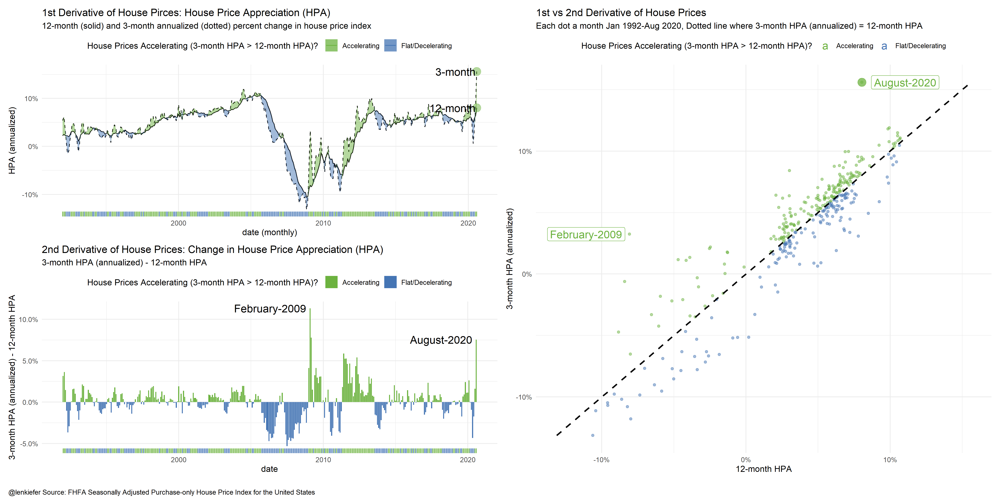
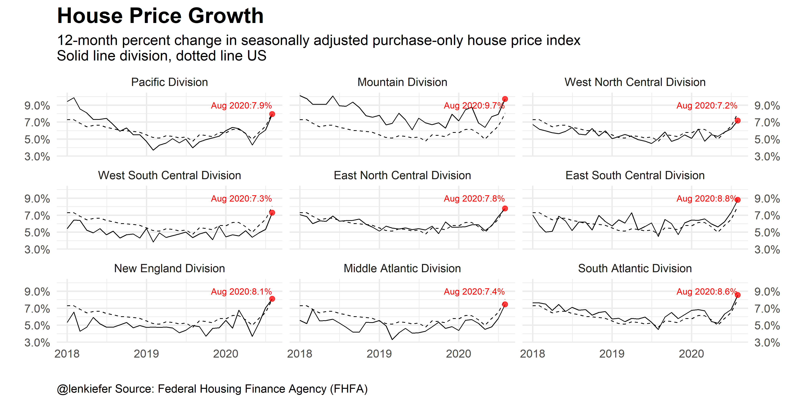

Today the FHFA released their house price index for August 2020. Per the report house prices in August 2020 increased 1.5 percentage points over the prior month (19.6% at an annualized rate). Over the last 12-months US house prices have increased 8%, and over the last 3-months they have risen over 15% on an annualized basis. That is an acceleration of over 7.5 percentage points, the largest turnaround in house price growth since the inflection point in 2009.
Consider the following chart (R code below). You might want to open it in a new browser window to embiggen.

Breaking down the chart components
The upper left panel shows the rate of change of house prices (House Price Appreciation or HPA), over a 12-month and 3-month window. The 3-month rate of change is annualized. I’ve shaded the periods when the 3-month HPA is greater than the 12-month HPA green to indicate prices are accelerating. Periods where the 12-month HPA is greater than or equal to the 3-month appreciation are blue indicating prices are flat to decelerating.
The bottom left panel displays the difference between the two rates (3-month less 12-month) as a bar chart. The color coding is the same.
Finally, the right panel is a scatterplot. Each month is a dot, the x axis is 12-month HPA, while the y axis is 3-month HPA. I’ve put a dotted line to indicate when 3-month HPA equals 12-month HPA. When the dots are above (below) the dotted line house prices are accelerating (decelerating) and are shaded green (blue). You can see August 2020 way up in the top right, an outlier almost as far away from the dotted line as February 2009.
This composite view shows that house prices have accelerated the most since early 2009.
The bigger picture
Low mortgage rates, long-run housing demand from the aging Millennial generation, and a possible shift in preferences towards single-family housing due to the pandemic have helped to push house prices higher over summer. Will that trend persist into next year? Some, like Barry Ritholtz think perhaps not.
While there certainly is a risk house prices could slow or even fall in the near future, I tend to think the recent term trend will be somewhat sticky. See for example this work by Ralph McLaughlin at Haus that shows inventory is super tight. As long as inventory remains lean the pressure on prices will not abate. With pressure on prices and some workers gaining flexibility, we might see more growth in the “Zoom Towns” as mobile workers migrate toward scenic, historically lower cost areas. For example, trading the Bay Area for Missoula, Montana.
The acceleration in national prices will probably throttle back. Future data revisions may well smooth out some of the recent volatility. Disruptions due to the (ongoing, accelerating) pandemic posed a significant challenge to interpreting housing statistics. Especially with housing’s typically large seasonal patterns disrupted. See for example, my post housing makes up for a lost spring.
Bonus chart regional tends
We can also consider regional trends and see that the acceleration is taking place all over the US and is not specific to a single Census Division.

R code for plots
##############################################################
# load libraries ----
##############################################################
library(data.table)
library(tidyverse)
library(lubridate)
library(patchwork)
##############################################################
# get house price data
##############################################################
df.hpi<-fread("http://www.fhfa.gov/DataTools/Downloads/Documents/HPI/HPI_master.csv")
##############################################################
# construct date variable (for monthly data)
##############################################################
df.hpi <- mutate(df.hpi,date=as.Date(ISOdate(yr,period*1,1)))
##############################################################
# filter to purchase-only monthly index
##############################################################
df<- filter(df.hpi,
hpi_type=="traditional",
hpi_flavor=="purchase-only",
frequency=="monthly")
##############################################################
# create house price appreciation variables
##############################################################
df <-
df %>% group_by(place_name) %>%
mutate(hpa=index_sa/lag(index_sa,12)-1,
hpa1=(index_sa/lag(index_sa))**12-1,
hpa3=(index_sa/lag(index_sa,3))**4-1)%>% ungroup() %>%
mutate(hpa3u=ifelse(hpa3>hpa,hpa3,hpa),
hpa3d=ifelse(hpa3<=hpa,hpa3,hpa))
df2 <- filter(df,place_name != "United States") %>%
mutate(place_namef=factor(place_name, levels=c("Pacific Division","Mountain Division","West North Central Division",
"West South Central Division","East North Central Division",
"East South Central Division","New England Division",
"Middle Atlantic Division","South Atlantic Division")))
dfus <- filter(df,place_name=="United States")
##############################################################
# Composite plot ----
##############################################################
g1 <-
ggplot(data=filter(dfus,yr>1991), aes(x=date,y=hpa))+
geom_line()+geom_line(linetype=2,aes(y=hpa3))+
geom_ribbon(aes(ymin=hpa3d,ymax=hpa3,fill="Accelerating"),alpha=0.5)+
geom_ribbon(aes(ymin=hpa3u,ymax=hpa3,fill="Flat/Decelerating"),alpha=0.5)+
theme_minimal()+
geom_point(data= .%>% tail(1),size=5,alpha=0.5,aes(y=hpa3),
color="#6CB23F")+
geom_point(data= .%>% tail(1),size=5,alpha=0.5,aes(y=hpa),
color="#6CB23F")+
geom_text(data= .%>% tail(1),nudge_x=-30,hjust=1,
size=5,aes(label="3-month",y=hpa3))+
geom_text(data= .%>% tail(1),nudge_x=-30,hjust=1,
size=5,aes(label="12-month"))+
scale_y_continuous(labels=scales::percent)+
theme(legend.position="top",
plot.caption=element_text(face="bold"))+
labs(x="date (monthly)", y="HPA (annualized)",
title="1st Derivative of House Pirces: House Price Appreciation (HPA)",
subtitle="12-month (solid) and 3-month annualized (dotted) percent change in house price index")+
geom_rug(aes(color=ifelse(hpa3>hpa,"Accelerating","Flat/Decelerating")),sides="b")+
scale_color_manual(values=c("#6CB23F","#4575b4"),name="House Prices Accelerating (3-month HPA > 12-month HPA)? ")+
scale_fill_manual(values=c("#6CB23F","#4575b4"),name="House Prices Accelerating (3-month HPA > 12-month HPA)? ")
g2<-
ggplot(data=filter(dfus,yr>1991), aes(x=date,y=hpa3-hpa,fill=ifelse(hpa3>hpa,"Accelerating","Flat/Decelerating")))+
geom_col()+
labs(y="3-month HPA (annualized) - 12-month HPA",
title="2nd Derivative of House Prices: Change in House Price Appreciation (HPA)",
subtitle="3-month HPA (annualized) - 12-month HPA")+
theme_minimal()+
scale_y_continuous(labels=scales::percent)+
geom_text(data= .%>% tail(1),nudge_x=-100,fill="white",hjust=1,
size=5,aes(label=format(date,"%B-%Y")))+
geom_text(data= .%>% filter(date=="2009-02-01"),nudge_x=-100,hjust=1,
fill="white",
size=5,aes(label=format(date,"%B-%Y")))+
theme(legend.position="top",
plot.caption=element_text(face="bold"))+
geom_rug(aes(color=ifelse(hpa3>hpa,"Accelerating","Flat/Decelerating")),sides="b")+
scale_color_manual(values=c("#6CB23F","#4575b4"),name="House Prices Accelerating (3-month HPA > 12-month HPA)? ")+
scale_fill_manual(values=c("#6CB23F","#4575b4"),name="House Prices Accelerating (3-month HPA > 12-month HPA)? ")
g3<-
ggplot(data=filter(dfus,yr>1991),
aes(y=hpa3,x=hpa,color=ifelse(hpa3>hpa,"Accelerating","Flat/Decelerating")))+
geom_point(alpha=0.5)+
geom_point(data= .%>% tail(1),size=5,alpha=0.75)+
geom_label(data= .%>% tail(1),nudge_x=.03,
size=5,aes(label=format(date,"%B-%Y")))+
geom_label(data= .%>% filter(date=="2009-02-01"),nudge_x=-.03,
size=5,aes(label=format(date,"%B-%Y")))+
theme_minimal()+
scale_y_continuous(labels=scales::percent)+
scale_x_continuous(labels=scales::percent)+
theme(legend.position="top",
plot.caption=element_text(face="bold"))+
stat_smooth(fullrange = TRUE,aes(x=hpa3),linetype=2,color="black")+
scale_color_manual(values=c("#6CB23F","#4575b4"),name="House Prices Accelerating (3-month HPA > 12-month HPA)? ")+
scale_fill_manual(values=c("#6CB23F","#4575b4"),name="House Prices Accelerating (3-month HPA > 12-month HPA)? ")+
labs(y="3-month HPA (annualized)",x="12-month HPA",
title="1st vs 2nd Derivative of House Prices",
subtitle="Each dot a month Jan 1992-Aug 2020, Dotted line where 3-month HPA (annualized) = 12-month HPA")
##############################################################
# combine plots with patchwork
##############################################################
g1+g2+g3+plot_layout(
design="13
23")+
plot_annotation(caption="\n@lenkiefer Source: FHFA Seasonally Adjusted Purchase-only House Price Index for the United States ",
theme=theme(plot.caption=element_text(hjust=0)))
##############################################################
# bonus chart, regional trends
##############################################################
# get just US data
dfus <- filter(df,place_name=="United States")
ggplot(data=filter(df2,yr>2017), aes(x=date,y=hpa))+
geom_line()+
theme_minimal(base_size=18)+
geom_line(data=filter(dfus,yr>2017),linetype=2)+
geom_point(data=.%>% filter(date==max(date)),color="red", size=3,alpha=0.75)+
geom_text(data=.%>% filter(date==max(date)),color="red",
aes(y=0.09,
label=paste0(format(date,"%b %Y"),":",scales::percent(hpa,accuracy=0.1)),hjust=1))+
#facet_wrap(~paste0(place_namef,"\n(dotted line US)"))+
facet_wrap(~place_namef)+
scale_y_continuous(labels=scales::percent,sec.axis=dup_axis())+
labs(x="",y="", title="House Price Growth",
subtitle="12-month percent change in seasonally adjusted purchase-only house price index\nSolid line division, dotted line US",
caption="@lenkiefer Source: Federal Housing Finance Agency (FHFA)")+
theme(plot.title=element_text(face="bold",size=rel(1.5)),
plot.caption=element_text(hjust=0))